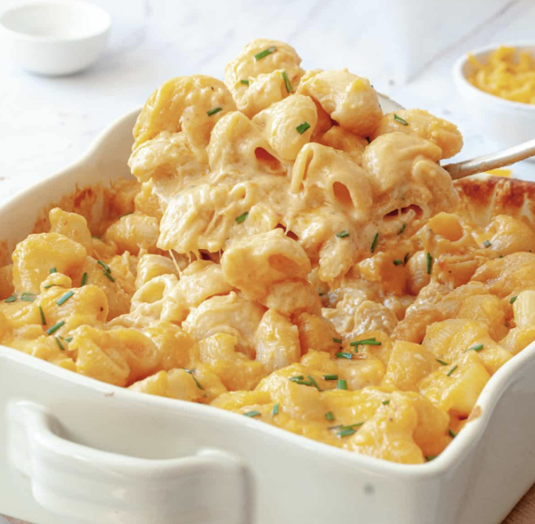

Mac n Cheese

Ingredients
- 1 pound dried elbow macaroni
- 6 tablespoons (3/4 stick) unsalted butter, plus more for the baking dish
- 1 1/2 pounds medium cheddar cheese (about 6 cups shredded)
- 1/4 cup all-purpose flour
- 5 cups whole milk or half-and-half, or a combination
- 1 3/4 teaspoons kosher salt
- 1/4 teaspoon freshly ground black pepper
- Paprika, for garnish (optional)
Instructions
- Arrange a rack in the middle of the oven and heat the oven to 350°F. Coat a 9x13-inch baking dish with butter.
- Bring a large pot of heavily salted water to a boil. Add 1 pound dried elbow macaroni and cook for 2 minutes less than package directions for al dente. Meanwhile, grate 1 1/2 pounds medium cheddar cheese on the large holes of a box grater (about 6 cups). Reserve 1 cup of the cheese for sprinkling.
- Drain the macaroni. Melt 6 tablespoons unsalted butter in the now-empty pot over medium heat. Sprinkle in 1/4 cup all-purpose flour, and stir until it turns golden and begins to smell toasted, 1 to 1 1/2 minutes.
- Slowly whisk in 5 cups whole milk or half-and-half, 1/2 cup at a time, until no lumps of flour remain. Bring to a boil. Reduce the heat to medium-low and continue cooking, whisking frequently, until the sauce is thickened and clings to the back of a spoon, 5 to 7 minutes. You may need to adjust the heat to low to prevent the milk from boiling over.
- Remove the pot from the heat. Add the remaining 5 cups cheese, 1 3/4 teaspoons kosher salt, and 1/4 teaspoon black pepper, and stir until the cheese is melted. Add the macaroni and stir to combine.
- Transfer half of the macaroni and cheese to the baking dish and spread into an even layer. Sprinkle with half of the reserved cheese. Repeat layering the remaining macaroni and cheese and shredded cheese. Sprinkle paprika over the top if desired.
- Bake until the mac and cheese is bubbling around the edges and the cheese on top is melted and golden brown in spots, about 10 minutes.
- Enjoy!